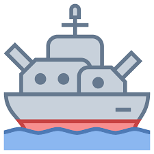

<!-- Fixed navbar -->
<nav class="navbar navbar-expand-sm bg-dark navbar-dark" data-toggle="affix">
  <div class="mx-auto d-sm-flex d-block flex-sm-nowrap">
      <a class="navbar-brand" href="#"></a>
      <button class="navbar-toggler" type="button" data-toggle="collapse" data-target="#navbarsExample11" aria-expanded="false" aria-label="Toggle navigation">
          <span class="navbar-toggler-icon"></span>
      </button>
      <div class="collapse navbar-collapse text-center" id="navbarsExample11">
          <ul class="navbar-nav">
            <li class="nav-item">
              <span><a [routerLink]="['/login']" class="nav-link">Login </a></span>
            </li>
            <li class="nav-item">
              <span><a [routerLink]="['/createPlayer']" class="nav-link">Create Account</a></span>
            </li>
            <li class="nav-item">
              <span><a [routerLink]="['/statistics']" *ngIf="isAuthenticated" class="nav-link">Top Players</a></span>
            </li>
            <li class="nav-item">
              <span><a [routerLink]="['/audit']" *ngIf="isAuthenticated" class="nav-link">Audit</a></span>
            </li>
          </ul>
      </div>
  </div>
</nav>

<!-- Begin page content -->
<main role="main" class="container" >
  <router-outlet></router-outlet>
</main>

<!-- Fixed footer -->
<footer class="footer">
  <div class="justify-content-center">
    <div class="d-flex flex-row justify-content-center">
      <div class="mr-2"></div>
      <div><a href="https://github.com/visualsanity/Battleship.Microservices" target="_blank">Battleship
          Microservices</a></div>
    </div>
  </div>
</footer>